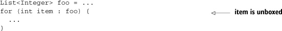
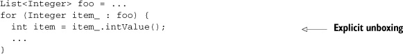
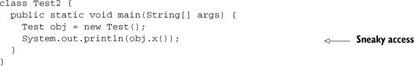
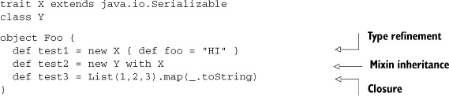

{% include JB/setup %}
{% raw %}
<div>

<div class="calibre5"></div><h2 class="chapter" id="ch10">Chapter 10. <a id="ch10__title" class="calibre6"></a>Integrating Scala with Java
      </h2>
      <p class="calibre2"> </p><table cellspacing="5" width="100%" border="1" class="calibre10"><colgroup class="calibre19"><col width="550" class="calibre12"/></colgroup><tbody class="calibre13"><tr class="calibre14"><td class="calibre20"/>
            </tr></tbody></table><div class="calibre4">
         
         <b id="ch10sb01" class="calibre21">In this chapter</b>
         
         <p class="calibre22"></p>
         <ul class="calibre23"><li class="calibre24">The benefits of using interfaces for Scala-Java interaction</li>
            
            <li class="calibre24">The dangers of automatic implicit conversions of Java types</li>
            
            <li class="calibre24">The complications of Java serialization in Scala</li>
            
            <li class="calibre24">How to effectively use annotations in Scala for Java libraries</li>
            
         </ul></div>
      <table cellspacing="5" width="100%" border="1" class="calibre10"><colgroup class="calibre19"><col width="550" class="calibre12"/></colgroup><tbody class="calibre13"><tr class="calibre14"><td class="calibre20"/>
            </tr></tbody></table><p class="calibre2"> </p><p class="noind">One of the biggest advantages of the Scala language is its ability to seamlessly interact with existing Java libraries and
         applications. Although this interaction isn’t completely seamless, Scala offers the tightest integration to Java of any JVM
         language.
      </p>
      
      <p class="noind">The key to knowing how to integrate Scala and Java lies in the Java Virtual Machine specification and how each language encodes
         onto that specification. Scala does its best to translate simple language features directly onto JVM features. But complicated
         Scala features are implemented with some compiler tricks, and these tricks are usually the cause of issues when integrating
         with Java. For the most part, the Java language translates simply into JVM bytecode; however, it too has language features
         that use compiler tricks. These will also cause rough spots in Scala/ Java interaction.
      </p>
      
      <p class="noind"><a id="iddle1127" class="calibre25"></a><a id="iddle1563" class="calibre25"></a><a id="iddle1580" class="calibre25"></a><a id="iddle1609" class="calibre25"></a><a id="iddle2065" class="calibre25"></a>Another benefit of understanding how to interface Scala with Java is that it helps to integrate Scala with every other JVM
         language. Because Java is king on the JVM, all alternative JVM languages provide means of using existing Java code. This means
         that communications from Scala to another JVM language can be accomplished through Java in the worst case. Scala is working
         on language features to integrate directly with dynamic languages, but even with the 2.9.0 release, these features are considered
         experimental.
      </p>
      
      <p class="noind">This chapter focuses on four big issues in Scala/Java interaction. The first issue is that Scala treats all types as objects,
         and Java supports primitives within the language. This leads to issues that can be solved by creating appropriate interfaces
         for communication between Java and Scala. Other mismatches can be alleviated with judicious use of implicit conversions.
      </p>
      
      <p class="noind">The second issue is implicit conversions, which tend to be overutilized. While extremely useful, they can cause subtle bugs
         in Scala/Java interaction. We’ll cover these in detail in <a href="#ch10lev1sec2" class="calibre7">section 10.2</a>.
      </p>
      
      <p class="noind">The third issue is Java serialization. Scala does a lot to support Java serialization seamlessly and succeeds for the most
         part. A few advanced Scala features can cause issues with Java serialization. We’ll discuss these in <a href="#ch10lev1sec3" class="calibre7">section 10.3</a>.
      </p>
      
      <p class="noind">The fourth issue is with annotations. Scala adheres to a uniform access principle—that is, Scala makes no distinction between
         methods and fields; they share the same namespace. Java does distinguish between fields and methods. Some Java libraries require
         specific methods or fields to have annotations. Scala provides some advanced annotation features that enable this to succeed.
         We’ll discuss these in <a href="#ch10lev1sec4" class="calibre7">section 10.4</a>.
      </p>
      
      <p class="noind">Let’s look into the mismatch between Java primitives and Scala objects.</p>
      
      
      <h3 id="ch10lev1sec1" class="calibre17"><a id="ch10lev1sec1__title" class="calibre6"></a>10.1. The language mismatch between Scala and Java
      </h3>
      
      <p class="noind">The Scala and Java languages offer tight integration. Scala classes can be instantiated and extended within Java. Java interfaces
         and classes can be extended within Java. Scala trait can be extended within Java using a bit of trickery. But this seemingly
         tight integration runs afoul of three rough patches: primitive boxing, visibility differences, and inexpressible language
         features.
      </p>
      
      <p class="noind">Primitive boxing is the (semi-)automatic conversion of primitive values on the JVM into objects. This is done because generic
         parameters are implemented through type-erasure. <i class="calibre9">Type-erasure</i> refers to the practice where, although the generic parameters are known to the compiler at compile time, they get erased
         to <kbd class="calibre18">java.lang.Object</kbd> at runtime. This was one of the means with which Java retained backwards compatibility when it introduced generics. Scala
         and Java implement this differently, which we’ll look into in <a href="#ch10lev2sec1" class="calibre7">section 10.1.1</a>.
      </p>
      
      <p class="noind"><i class="calibre9">Visibility</i> refers to using protected and private modifiers to change the access restrictions on classes and their members. Scala prefers
         to make everything visible at runtime (that is, in the bytecode) while Java prefers to enforce as much runtime <a id="iddle1564" class="calibre25"></a><a id="iddle1610" class="calibre25"></a><a id="iddle1785" class="calibre25"></a><a id="iddle1787" class="calibre25"></a><a id="iddle1862" class="calibre25"></a>visibility restrictions as the JVM allows. These competing goals can lead to runtime visibility problems. We’ll discuss these
         in <a href="#ch10lev2sec2" class="calibre7">section 10.1.2</a>.
      </p>
      
      <p class="noind">Inexpressible language features are features within the Scala language that can’t be expressed within the Java language. Things
         like curried methods, implicit parameters and higher-kinded types are examples. It’s best to avoid or hide these features
         in any code that needs to interface with Scala and Java. We’ll discuss these in more detail in <a href="#ch10lev2sec3" class="calibre7">section 10.1.3</a>.
      </p>
      
      <p class="noind">The first difference between Scala and Java is the special treatment of <i class="calibre9">primitives</i>, things created directly on the stack and passed by value, and <i class="calibre9">objects</i>, things created on the heap and passed by reference. In Java, primitives are isolated from objects. Specifically, code using
         generic type parameters in Java can’t use primitives. To get around this, Java defines a set of classes that mimic the types
         of primitives. When an object is required, the primitive can be placed into an object. This technique is known as boxing the
         primitive. The object makes a box in which to carry the primitive. Scala makes no distinction between primitives and objects,
         and performs boxing behind the scenes on behalf of the developer.
      </p>
      
      
      <h4 id="ch10lev2sec1" class="calibre28">10.1.1. <a id="ch10lev2sec1__title" class="calibre25"></a>Differences in primitive boxing
      </h4>
      
      <p class="noind">In the Scala language, <i class="calibre9">everything</i> is an object and the compiler does its best to hide the fact that primitives aren’t objects. In the Java language, the programmer
         is forced to pay attention to the difference between a primitive and an object containing the same value. This means that
         <kbd class="calibre18">java.util.List&lt;int&gt;</kbd> isn’t a valid type in Java, but <kbd class="calibre18">java.util.List&lt;Integer&gt;</kbd> is valid.
      </p>
      
      <p class="noind">To relieve the overhead of boxing, Java introduced <i class="calibre9">auto-(un)boxing</i> in version 1.5. Autoboxing is an implicit conversion from a primitive type to its boxed type. This allows you to write a
         <kbd class="calibre18">for</kbd> loop as the following:
      </p>
      
      
      <p class="center1"></p>
      
      
      <p class="noind">In the example, the line <kbd class="calibre18">int item : foo</kbd> is a <kbd class="calibre18">for</kbd> expression that’s unboxing all integers in the list <kbd class="calibre18">foo</kbd>. Although not seen, this is the same code as the following:
      </p>
      
      
      <p class="center1"></p>
      
      
      <p class="noind">This example is similar except that the <kbd class="calibre18">int item</kbd> is explicitly unboxed from the <kbd class="calibre18">Integer</kbd> returned from the list. Although boxing happens automatically in Java, it can be an expensive operation at runtime.
      </p>
      
      <p class="noind">In Scala, there’s no distinction between primitives and objects. The language treats <kbd class="calibre18">scala.Int</kbd> as an object. The compiler tries to optimize the usage of <kbd class="calibre18">scala.Int</kbd> such <a id="iddle1064" class="calibre25"></a><a id="iddle1534" class="calibre25"></a><a id="iddle1629" class="calibre25"></a>that it remains in primitive form throughout the life of a program. For example, we’ll define the following Scala object:
      </p>
      
      <pre id="PLd0e26833" class="calibre8">object Test {
  def add(x: Int, y: Int) = x + y
}</pre>
      
      <p class="noind">This object defines one method, <kbd class="calibre18">add</kbd>. The <kbd class="calibre18">add</kbd> method takes two <kbd class="calibre18">scala.Int</kbd> values and returns a <kbd class="calibre18">scala.Int</kbd>. The bytecode emitted by the compiler is as follows:
      </p>
      
      <pre id="PLd0e26854" class="calibre8">public int add(int, int);
  Code:
   0: iload_1
   1: iload_2
   2: iadd
   3: ireturn

}</pre>
      
      <p class="noind">The signature for the <kbd class="calibre18">add</kbd> method uses the primitive <kbd class="calibre18">int</kbd> type. The bytecode emitted uses <kbd class="calibre18">iload</kbd>, <kbd class="calibre18">iadd</kbd>, and <kbd class="calibre18">ireturn</kbd>. These three bytecodes operate on primitive integers. What happens if we use a generic type with <kbd class="calibre18">scala.Int</kbd>? The compiler will generate boxing code as needed:
      </p>
      
      <pre id="PLd0e26881" class="calibre8">object Test {
  def add2(items: List[Int]) = {
    var sum = 0
    val it = x.iterator
    while (it.hasNext) {
      sum += it.next
    }
    sum
  }
}</pre>
      
      <p class="noind">The object <kbd class="calibre18">Test</kbd> defines a new method <kbd class="calibre18">add2</kbd>. This method take a generic <kbd class="calibre18">List</kbd> class parameterized to have <kbd class="calibre18">scala.Int</kbd> elements. The code creates a <kbd class="calibre18">sum</kbd> variable, grabs an <kbd class="calibre18">iterator</kbd> to the list, and iterates over the values in the list. Each of these values is added to the <kbd class="calibre18">sum</kbd> variable and the <kbd class="calibre18">sum</kbd> is returned. Let’s take a look at the bytecode in the following listing.
      </p>
      
      
      
      <h5 class="notetitle" id="ch010list1">Listing 10.1. <a id="ch010list1__title" class="calibre25"></a>The <kbd class="calibre18">add2</kbd> method
      </h5>
      <pre id="PLd0e26922" class="calibre8">public int add2(scala.collection.immutable.List);
  Code:
   0: iconst_0
   1: istore_2
   2: aload_1
   3: invokeinterface #28, 1;
     //InterfaceMethod
  scala/collection/LinearSeqLike.iterator:()Lscala/collection/Iterator;
   8: astore_3
   9: aload_3
   10: invokeinterface #34, 1;
     //InterfaceMethod scala/collection/Iterator.hasNext:()Z
   15: ifeq 33
   18: iload_2
   19: aload_3
   20: invokeinterface #38, 1;
     //InterfaceMethod
  scala/collection/Iterator.next:()Ljava/lang/Object;
   25: invokestatic #44;
     //Method
  scala/runtime/BoxesRunTime.unboxToInt:(Ljava/lang/Object;)I
   28: iadd
   29: istore_2
   30: goto 9
   33: iload_2
   34: ireturn
}</pre>
      
      <p class="noind"><a id="iddle1014" class="calibre25"></a><a id="iddle1126" class="calibre25"></a><a id="iddle1413" class="calibre25"></a><a id="iddle1695" class="calibre25"></a><a id="iddle1854" class="calibre25"></a><a id="iddle1878" class="calibre25"></a><a id="iddle1947" class="calibre25"></a>The <kbd class="calibre18">add2</kbd> method is compiled so that it takes the <kbd class="calibre18">scala.collection.immutable.List</kbd> type as a parameter and returns a primitive integer. The <kbd class="calibre18">List</kbd> class is generic and suffers from the same problem as Java generics. The implementation of <kbd class="calibre18">Generic</kbd> types in Java forces the use of <kbd class="calibre18">Object</kbd> at runtime; therefore, primitives can’t be generic type parameters. Label 20 in the byte code shows that invoking <kbd class="calibre18">next</kbd> against the <kbd class="calibre18">List</kbd>’s iterator returns the type <kbd class="calibre18">Object</kbd>. Label 25 shows Scala’s version of autoboxing: the <kbd class="calibre18">Boxes-RunTime</kbd> class. Scala uses the <kbd class="calibre18">scala.runtime.BoxesRunTime</kbd> class to implement all boxing/unboxing operations as efficiently as possible.
      </p>
      <p class="calibre2"> </p><table cellspacing="5" width="100%" border="1" class="calibre10"><colgroup class="calibre19"><col width="550" class="calibre12"/></colgroup><tbody class="calibre13"><tr class="calibre14"><td class="calibre20"/>
            </tr></tbody></table><div class="calibre4">
         
         <b id="ch10sb02" class="calibre21">Avoiding boxing in Scala</b>
         
         <p class="noind">Starting in Scala 2.8.0 the <kbd class="calibre18">@specialized</kbd> keyword can be used on generic classes to avoid boxing entirely. This is done through method overloading and type-specific
            subclasses. For example, the <kbd class="calibre18">Iterator</kbd> class in specialization would be written as follows:
         </p>
         
         <pre id="PLd0e27014" class="calibre8">trait Iterator[@specialized(Int) T] {
 def hasNext: Boolean
 def next: T
}</pre>
         
         <p class="noind">This results in the following JVM interface:</p>
         
         <pre id="PLd0e27023" class="calibre8">public interface Iterator {
 public abstract boolean hasNext();
 public abstract java.lang.Object next();
 public abstract int next$mcI$sp();
}</pre>
         
         <p class="noind">The <kbd class="calibre18">next</kbd> method is defined to return an <kbd class="calibre18">Object</kbd>, as is standard in generic implementations in Java and Scala. But there’s a specialized version of <kbd class="calibre18">next</kbd> called <kbd class="calibre18">next$mcI$sp</kbd> that returns a primitive <kbd class="calibre18">int</kbd>. When the compiler knows that the <kbd class="calibre18">Iterator</kbd> has a type parameter of <kbd class="calibre18">Int</kbd>, it will generate calls to the <kbd class="calibre18">next$mcI$sp</kbd> rather than <kbd class="calibre18">next</kbd>. This can be used to remove the cost of boxing, albeit by creating larger classes.
         </p>
         
      </div>
      <table cellspacing="5" width="100%" border="1" class="calibre10"><colgroup class="calibre19"><col width="550" class="calibre12"/></colgroup><tbody class="calibre13"><tr class="calibre14"><td class="calibre20"/>
            </tr></tbody></table><p class="calibre2"> </p><p class="noind"><a id="iddle1161" class="calibre25"></a><a id="iddle1576" class="calibre25"></a><a id="iddle1586" class="calibre25"></a><a id="iddle1863" class="calibre25"></a>The important point here is that both Scala and Java use boxing with generic classes. Scala hides boxing entirely behind <kbd class="calibre18">scala.Int</kbd> while <kbd class="calibre18">Java</kbd> promotes boxing into the language itself. This mismatch can cause issues when working with Scala from Java or Java from Scala.
         These issues can be solved using one simple rule: Use primitives in methods used from both Scala and Java.
      </p>
      <p class="calibre2"> </p><table cellspacing="5" width="100%" border="1" class="calibre10"><colgroup class="calibre19"><col width="550" class="calibre12"/></colgroup><tbody class="calibre13"><tr class="calibre14"><td class="calibre20"/>
            </tr></tbody></table><div class="calibre4">
         
         <b id="ch10sb03" class="calibre21">Rule 24: Prefer primitives in methods when integrating Java and Scala</b>
         
         <p class="noind">Scala attempts to preserve primitives throughout your code. It’s best to use primitives, and arrays, for the simplest interface
            between Java and Scala.
         </p>
         
      </div>
      <table cellspacing="5" width="100%" border="1" class="calibre10"><colgroup class="calibre19"><col width="550" class="calibre12"/></colgroup><tbody class="calibre13"><tr class="calibre14"><td class="calibre20"/>
            </tr></tbody></table><p class="calibre2"> </p><p class="noind">This simple rule can avoid a few of the issues with Scala/Java interaction. We still have the issue of generic parameters.
         In Java, a list of integers has the type <kbd class="calibre18">java.util.List&lt;java.lang.Integer&gt;</kbd>. In Scala, a list of integers has the type <kbd class="calibre18">java.util.List [scala.Int]</kbd>. Although the runtime implementation of the two lists is the same, Scala’s type system does not automatically convert from
         Java’s boxed primitives to Scala’s unified object types—the Scala compiler won’t automatically convert a <kbd class="calibre18">java.util.List[java.lang.Integer]</kbd> into a <kbd class="calibre18">java.util.List[scala.Int]</kbd> even if such a conversion would be type-safe.
      </p>
      
      <p class="noind">Two solutions to this issue exist. One is to perform a cast from <kbd class="calibre18">java.util.List[java.lang.Integer]</kbd> to <kbd class="calibre18">java.util.List[scala.Int]</kbd>. The other is to define an implicit conversion that will shim Java types into Scala types. Let’s look at the casting:
      </p>
      
      <pre id="PLd0e27123" class="calibre8">scala&gt; val x = new java.util.ArrayList[java.lang.Integer]
x: java.util.ArrayList[java.lang.Integer] = []

scala&gt; x.add(java.lang.Integer.valueOf(1))
res0: Boolean = true

scala&gt; x.add(java.lang.Integer.valueOf(2))
res1: Boolean = true

scala&gt; val z = x.asInstanceOf[java.util.List[Int]]
z: java.util.List[Int] = [1, 2]

scala&gt; z.get(0)
res3: Int = 1</pre>
      
      <p class="noind">The first line constructs a new <kbd class="calibre18">java.util.ArrayList</kbd> with a generic parameter equal to <kbd class="calibre18">java.lang.Integer</kbd>. The next two lines add data to the list. The third line defines a new list <kbd class="calibre18">z</kbd>, which is a cast from <kbd class="calibre18">java.util.ArrayList[java.lang.Integer]</kbd> to <kbd class="calibre18">java.util.List[scala.Int]</kbd>. The REPL prints the values in the list when describing the return types. Notice that the correct values are shown and there
         are no runtime exceptions. The next retrieves the first value from the cast list. Notice that the return type is <kbd class="calibre18">scala.Int</kbd> and there are no <kbd class="calibre18">ClassCastExceptions</kbd>. The <kbd class="calibre18">asInstanceOf</kbd> cast was legal because Scala and Java box their primitive integers to the same type: <kbd class="calibre18">java.lang.Integer</kbd>.
      </p>
      
      <p class="noind">These casts may be considered dangerous. They subvert the type system in Scala and prevent it from discovering future errors.
         For example, if a method is changed from taking a <kbd class="calibre18">java.util.List[java.lang.Integer]</kbd> to a <kbd class="calibre18">java.util.List [MySpecialClass]</kbd>, <a id="iddle1232" class="calibre25"></a><a id="iddle1565" class="calibre25"></a><a id="iddle1611" class="calibre25"></a><a id="iddle2123" class="calibre25"></a>the cast to <kbd class="calibre18">java.util.List[scala.Int]</kbd> will still compile and prevent other compile-time errors.
      </p>
      
      <p class="noind">The second solution can avoid this pitfall by operating within the type system. The second solution is to create an implicit
         conversion from <kbd class="calibre18">java.util.List [java.lang.Integer]</kbd> to <kbd class="calibre18">java.util.List[scala.Int]</kbd>:
      </p>
      
      <pre id="PLd0e27211" class="calibre8">scala&gt; implicit def convertToScala(
     |	   x: java.util.List[java.lang.Integer]) =
     |       x.asInstanceOf[java.util.List[Int]]
convertToScala:
  (x: java.util.List[java.lang.Integer])java.util.List[Int]

scala&gt; def foo(x: java.util.List[Int]) = x.get(0)
foo: (x: java.util.List[Int])Int

scala&gt; foo(x)
res4: Int = 1</pre>
      
      <p class="noind">The implicit <kbd class="calibre18">convertToScala</kbd> is defined to take a <kbd class="calibre18">java.util.List[java.lang.Integer]</kbd>. It performs the same cast from the previous example. The difference here is that the dangerous cast is hidden behind the
         method such that it can only be used in a type-safe fashion; the method can only take lists of <kbd class="calibre18">java.lang.Integer</kbd> types, so if the generic type parameter of the list is changed, the implicit view won’t be used at all and the compiler will
         issue the appropriate type error.
      </p>
      
      <p class="noind">The scalaj-collections library provides primitive-safe implicit conversions between Scala and Java collection types. This
         offers the best mechanism to handle primitives in collections, but noncollection types may still require a hand-rolled implicit
         conversion.
      </p>
      
      <p class="noind">The next big issue is the difference in visibility implementation.</p>
      
      
      
      <h4 id="ch10lev2sec2" class="calibre28">10.1.2. <a id="ch10lev2sec2__title" class="calibre25"></a>Differences in visibility
      </h4>
      
      <p class="noind">Java enforces visibility both statically and dynamically. Visibility is enforced both by the Java compiler and by the JVM
         runtime. Java embeds visibility restrictions directly into the bytecode that the JVM uses to enforce at runtime.
      </p>
      
      <p class="noind">Scala enforces visibility statically, and does its best to encode visibility constraints for the JVM. Scala’s visibility design
         is far more powerful than Java’s and can’t be directly encoded into bytecode for runtime enforcement. Scala tends to make
         methods publicly visible and enforces all constraints at compile time, unless the visibility rule in Scala lines up directly
         with one from Java.
      </p>
      
      <p class="noind">Let’s look at a simple example. Java’s <kbd class="calibre18">protected</kbd> modifier differs from Scala’s. Specifically, in Scala, companion objects are allowed to access protected members of their
         companion classes. This means that Scala can’t encode protected members using the JVM’s protected bytecode because that would
         restrict companion classes from accessing protected members. Let’s look at an example.
      </p>
      
      <pre id="PLd0e27253" class="calibre8">class Test {
 protected val x = 10
}</pre>
      
      <p class="noind"><a id="iddle1566" class="calibre25"></a><a id="iddle1612" class="calibre25"></a><a id="iddle1959" class="calibre25"></a><a id="iddle2136" class="calibre25"></a>The <kbd class="calibre18">Test</kbd> class is defined with a single member <kbd class="calibre18">x</kbd>. The <kbd class="calibre18">val x</kbd> is protected and holds the value <kbd class="calibre18">10</kbd>. Let’s look at the generated bytecode for this class.
      </p>
      
      <pre id="PLd0e27304" class="calibre8">public class Test extends java.lang.Object implements scala.ScalaObject{
private final int x;

public int x();
  Code:
   0: aload_0
   1: getfield #11; //Field x:I
   4: ireturn


...</pre>
      
      <p class="noind">The <kbd class="calibre18">Test</kbd> class is defined with a private field <kbd class="calibre18">x</kbd> and a public accessor called <kbd class="calibre18">x</kbd>. This means that in Java an external user of the <kbd class="calibre18">Test</kbd> class could access the protected <kbd class="calibre18">x</kbd> method. Here’s an example:
      </p>
      
      
      <p class="center1"></p>
      
      
      <p class="noind">The <kbd class="calibre18">Test2</kbd> class is defined in Java. The main method is defined to construct a new Scala <kbd class="calibre18">Test</kbd> instance. The next line calls the protected <kbd class="calibre18">x</kbd> method and prints its value to the console. Even though the value is protected within Scala, the call succeeds in Java. Let’s
         run the <kbd class="calibre18">Test2</kbd> class:
      </p>
      
      <pre id="PLd0e27351" class="calibre8">$ java -cp /usr/share/java/scala-library.jar:. Test2
10</pre>
      
      <p class="noind">The program outputs the value <kbd class="calibre18">10</kbd> with no runtime visibility exception. Java doesn’t see Scala’s visibility constraints. This means that Java clients of Scala
         classes need to be on their best behavior to prevent modifying or accessing values that they shouldn’t.
      </p>
      <p class="calibre2"> </p><table cellspacing="5" width="100%" border="1" class="calibre10"><colgroup class="calibre19"><col width="550" class="calibre12"/></colgroup><tbody class="calibre13"><tr class="calibre14"><td class="calibre20"/>
            </tr></tbody></table><div class="calibre4">
         
         <b id="ch10sb04" class="calibre21">Rule 25: Don’t call methods with $ in the name from Java</b>
         
         <p class="noind">Scala’s visibility rules are more advanced than Java and cannot be expressed. When calling into Scala from Java, avoid calling
            methods with <kbd class="calibre18">$</kbd> in the name, as these are implementation details of Scala’s encoding.
         </p>
         
      </div>
      <table cellspacing="5" width="100%" border="1" class="calibre10"><colgroup class="calibre19"><col width="550" class="calibre12"/></colgroup><tbody class="calibre13"><tr class="calibre14"><td class="calibre20"/>
            </tr></tbody></table><p class="calibre2"> </p><p class="noind">Visibility issues are a subset of a bigger issue with Java/Scala integration—that of inexpressible language features.</p>
      
      
      
      <h4 id="ch10lev2sec3" class="calibre28">10.1.3. <a id="ch10lev2sec3__title" class="calibre25"></a>Inexpressible language features
      </h4>
      
      <p class="noind">Java and Scala both have features that are inexpressible in the other language.</p>
      
      <p class="noind">Java has static values on classes. These are values that are constructed when a class is loaded and aren’t associated with
         any particular instance of the class. In Scala, everything is an object and there are no static values. We might argue that
         Scala’s objects are static values. Scala’s objects are implemented in terms of static values on the JVM but aren’t themselves
         static values. Consequently, Java libraries that require static values are hard to interact with from Scala.
      </p>
      
      <p class="noind">Scala has many features unavailable in Java, such as traits, closures, named and default parameters, implicit parameters,
         and type declarations. When interacting with Scala, Java can’t use implicit resolution to find missing parameters to methods.
         Java can’t use Scala’s default parameter definitions.
      </p>
      
      <p class="noind">For each of these issues, there’s usually a workaround somewhere, but it’s best to avoid these issues entirely. You can do
         this with a simple mechanism: Construct interfaces in Java that define all the types that will be passed between Java and
         Scala.
      </p>
      <p class="calibre2"> </p><table cellspacing="5" width="100%" border="1" class="calibre10"><colgroup class="calibre19"><col width="550" class="calibre12"/></colgroup><tbody class="calibre13"><tr class="calibre14"><td class="calibre20"/>
            </tr></tbody></table><h5 class="notetitle" id="ch10note01">Scala/Java Integration Tip</h5>
      
      
      <p class="noindclose">Construct interfaces in Java that define all types that will be passed between Java and Scala. Place these interfaces into
         a project that can be shared between the Java portions of code and the Scala portions of code. By limiting the features used
         in the integration points, there won’t be any feature mismatch issues.
      </p>
      
      <table cellspacing="5" width="100%" border="1" class="calibre10"><colgroup class="calibre19"><col width="550" class="calibre12"/></colgroup><tbody class="calibre13"><tr class="calibre14"><td class="calibre20"/>
            </tr></tbody></table><p class="calibre2"> </p><p class="noind">Because Java is more limited in features and compiles more directly to bytecode, it makes for a great integration language.
         Using Java interfaces ensures you avoid the corner case issues of integration, besides those of boxing.
      </p>
      
      <p class="noind">One example where using Java is required is on the Android platform which has an interface called <kbd class="calibre18">Parcelable</kbd>. You can use this interface to allow objects to be passed between processes. Because this could involve serializing the data,
         the <kbd class="calibre18">Parcelable</kbd> interface requires a static field that the Android platform can use to instantiate a <kbd class="calibre18">Parcelable</kbd>.
      </p>
      
      <p class="noind">For example, say that an application needs to pass addresses between processes on the Android platform. In Java, the <kbd class="calibre18">Address</kbd> class would look as shown in the following listing:
      </p>
      
      
      
      <h5 class="notetitle" id="ch010list2">Listing 10.2. <a id="ch010list2__title" class="calibre25"></a><kbd class="calibre18">Parcelable Address</kbd> for Android
      </h5>
      <pre id="PLd0e27435" class="calibre8">public class Address implements Parcelable {
     public String street;
     public String city;
     public String state;
     public String zip;
     public void writeToParcel(Parcel out, int flags) {
         out.writeString(street);
         out.writeString(city);
         out.writeString(state);
         out.writeString(zip);
     }

     private Address(Parcel in) {
         street = in.readString();
         city = in.readString();
         state = in.readString();
         zip = in.readString();
     }
    public int describeContents() {
        return 0;
    }

    public static final Parcelable.Creator&lt;Address&gt; CREATOR
            = new Parcelable.Creator&lt;MyParcelable&gt;() {
        public Address createFromParcel(Parcel in) {
            return new Address(in);
        }

        public Address[] newArray(int size) {
            return new Address[size];
        }
    };
}</pre>
      
      <p class="noind"><a id="iddle1037" class="calibre25"></a><a id="iddle1041" class="calibre25"></a><a id="iddle1066" class="calibre25"></a><a id="iddle1242" class="calibre25"></a><a id="iddle1267" class="calibre25"></a><a id="iddle2132" class="calibre25"></a><a id="iddle2151" class="calibre25"></a>The <kbd class="calibre18">Address</kbd> class is composed of four members: <kbd class="calibre18">street</kbd>, <kbd class="calibre18">city</kbd>, <kbd class="calibre18">state</kbd>, and <kbd class="calibre18">zip</kbd>. It has a <kbd class="calibre18">writeToParcel</kbd> method that’s Android’s way of flattening or serializing the class to send to another process. The private constructor for
         <kbd class="calibre18">Address</kbd> is used to deserialize the values from the <kbd class="calibre18">Parcel</kbd> it was stored in. The <kbd class="calibre18">describeContents</kbd> method returns a bit-mask that tells the Android platform the types of data that are contained in the parcel, in case any
         need special treatment. Finally, there’s a public static instance called <kbd class="calibre18">CREATOR</kbd> defined on the class of type <kbd class="calibre18">Parcelable.Creator&lt;Address&gt;</kbd>. The Android system uses this type to create and parse incoming <kbd class="calibre18">Address</kbd>es from other processes. This mechanism is also inexpressible in Scala.
      </p>
      
      <p class="noind">The solution in this case is to create a split between the pieces that require Java and the pieces that require Scala. In
         the case of <kbd class="calibre18">Address</kbd>, it’s such a simple class, that writing it completely in Java could be a fine solution. But if <kbd class="calibre18">Address</kbd> were more complex, this splitting would be appropriate. Let’s pretend that <kbd class="calibre18">Address</kbd> uses some advanced Scala type features in some of its member functions. To get <kbd class="calibre18">Address</kbd> to still be <kbd class="calibre18">Parcelable</kbd> in Android <i class="calibre9">and</i> to keep the advanced Scala features, it must be split. The Scala features can stay in an abstract class that the Java statics
         can extend. The Scala class would look as follows:
      </p>
      
      <pre id="PLd0e27538" class="calibre8">abstract class AbstractAddress(
      val street: String,
      val city: String,
      val state: String,
      val zip: String) extends Parceable {
  override def writeToParcel(out: Parcel, flags: Int) {
    out.writeString(street)
    out.writeString(city)
    out.writeString(state)
    out.writeString(zip)
  }
  override def describeContents = 0
}</pre>
      
      <p class="noind">The <kbd class="calibre18">AbstractAddress</kbd> class is defined with <kbd class="calibre18">street</kbd>, <kbd class="calibre18">city</kbd>, <kbd class="calibre18">state</kbd>, and <kbd class="calibre18">zip</kbd> as constructors and as <kbd class="calibre18">val</kbd> members. The <kbd class="calibre18">abstract</kbd> class can also define all the methods required by the <kbd class="calibre18">Parcelable</kbd> interface: <kbd class="calibre18">writeToParcel</kbd> and <kbd class="calibre18">describeContents</kbd>. But the static <a id="iddle1490" class="calibre25"></a><a id="iddle1560" class="calibre25"></a><a id="iddle1595" class="calibre25"></a><a id="iddle1857" class="calibre25"></a><kbd class="calibre18">CREATOR</kbd> instance can’t be made in Scala. This can be done in Java. Let’s extend the <kbd class="calibre18">AbstractAddress</kbd> class in Java to allow for usage in Android:
      </p>
      
      <pre id="PLd0e27607" class="calibre8">public class Address extends AbstractAddress {
  private Address(Parcel in) {
    super(in.readString(),
          in.readString(),
          in.readString(),
          in.readString());
  }
  public static final Parcelable.Creator&lt;Address&gt; CREATOR
    = new Parcelable.Creator&lt;MyParcelable&gt;() {
        public Address createFromParcel(Parcel in) {
          return new Address(in);
        }
        public Address[] newArray(int size) {
          return new Address[size];
        }
     };
}</pre>
      
      <p class="noind">The <kbd class="calibre18">Address</kbd> class is defined with a private constructor that takes in a <kbd class="calibre18">Parcel</kbd> and delegates to the constructor defined in Scala. Then the static <kbd class="calibre18">CREATOR</kbd> instance is defined similarly to the Java-only version.
      </p>
      
      <p class="noind">Due to Scala’s tight integration with Java, interfacing with constructors and extending abstract classes can be seamless.
         This simple <kbd class="calibre18">Address Parcelable</kbd> example highlights what to do when running into APIs developed for Java without Scala in mind.
      </p>
      
      <p class="noind">Another area of concern when integrating with Java is the overuse of implicit conversions to adapt Java libraries into Scala
         idioms.
      </p>
      
      
      
      
      <h3 id="ch10lev1sec2" class="calibre17"><a id="ch10lev1sec2__title" class="calibre6"></a>10.2. Be wary of implicit conversions
      </h3>
      
      <p class="noind">One common mechanism of supporting the Scala/Java interaction is to create implicit conversions within Scala that promote
         Java types into a more Scala-friendly form. This can help ease the pain of using classes not designed for Scala but comes
         at a cost. Implicit conversions carry a few dangers that developers need to be aware of:
      </p>
      
      <p class="calibre22"></p>
      <ul class="calibre23"><li class="calibre24">Object identity and equality</li>
         
         <li class="calibre24">Chaining implicits.</li>
         
      </ul><p class="noind">The most common example of using implicit conversions to ease integration between Java and Scala are found in the Scala object
         <kbd class="calibre18">scala.collection.JavaConverters</kbd>. This object contains a set of implicit conversions to convert collections from Java to their Scala equivalents and vice
         versa. These implicit conversions are immensely handy but also suffer from all the issues associated with this design. Let’s
         look into how object identity and equality can become a problem when using <kbd class="calibre18">JavaConversions</kbd>.
      </p>
      
      
      
      <h4 id="ch10lev2sec4" class="calibre28">10.2.1. <a id="ch10lev2sec4__title" class="calibre25"></a>Object identity and equality
      </h4>
      
      <p class="noind"><a id="iddle1084" class="calibre25"></a><a id="iddle1100" class="calibre25"></a><a id="iddle1105" class="calibre25"></a><a id="iddle1235" class="calibre25"></a><a id="iddle1491" class="calibre25"></a><a id="iddle1561" class="calibre25"></a><a id="iddle1594" class="calibre25"></a><a id="iddle1710" class="calibre25"></a><a id="iddle1865" class="calibre25"></a><a id="iddle1883" class="calibre25"></a>One of the dangers of using implicits to wrap Scala or Java objects for interoperability is that it can alter object identity.
         This breaks equality in any code that might require equality. Let’s look at a simple example of converting a Java collection
         into a Scala one:
      </p>
      
      <pre id="PLd0e27734" class="calibre8">scala&gt; import collection.JavaConversions._
import collection.JavaConversions._

scala&gt; val x = new java.util.ArrayList[String]
x: java.util.ArrayList[String] = []

scala&gt; x.add("Hi"); x.add("You")

scala&gt; val y : Iterable[String] = x
y: Iterable[String] = Buffer(Hi, You)

scala&gt; x == y
res1: Boolean = false</pre>
      
      <p class="noind">The first line imports the <kbd class="calibre18">JavaConversions</kbd> implicit conversions. The next line creates the Java collection <kbd class="calibre18">ArrayList</kbd>. The values <kbd class="calibre18">"Hi"</kbd> and <kbd class="calibre18">"You"</kbd> are added to the array list. The <kbd class="calibre18">val y</kbd> is constructed with the type of <kbd class="calibre18">scala.Iterable</kbd>. This invokes an implicit conversion to adapt the Java <kbd class="calibre18">ArrayList</kbd> into a Scala <kbd class="calibre18">Iterable</kbd>. Finally, when testing equality of the two collections, the value is <kbd class="calibre18">false</kbd>. When wrapping a Java collection, the wrapped collection isn’t equal to the original.
      </p>
      <p class="calibre2"> </p><table cellspacing="5" width="100%" border="1" class="calibre10"><colgroup class="calibre19"><col width="550" class="calibre12"/></colgroup><tbody class="calibre13"><tr class="calibre14"><td class="calibre20"/>
            </tr></tbody></table><div class="calibre4">
         
         <b id="ch10sb05" class="calibre21">Rule 26: Avoid implicit views</b>
         
         <p class="noind">Implicit views, when interfacing with Java, can cause silent object identity issues and other problems. It’s best to be explicit.</p>
         
      </div>
      <table cellspacing="5" width="100%" border="1" class="calibre10"><colgroup class="calibre19"><col width="550" class="calibre12"/></colgroup><tbody class="calibre13"><tr class="calibre14"><td class="calibre20"/>
            </tr></tbody></table><p class="calibre2"> </p><p class="noind">The nuance of this issue can be subtle. For example, the implicit conversion from a Java collection to a Scala collection
         isn’t as obvious as in the previous example. Imagine there’s a Java class that looks as follows:
      </p>
      
      <pre id="PLd0e27782" class="calibre8">import java.util.ArrayList;

class JavaClass {
  public static ArrayList&lt;String&gt; CreateArray() {
    ArrayList&lt;String&gt; x = new ArrayList&lt;String&gt;();
    x.add("HI");
    return x;
  }
}</pre>
      
      <p class="noind">The class <kbd class="calibre18">JavaClass</kbd> has one method called <kbd class="calibre18">CreateArray</kbd> that returns an <kbd class="calibre18">ArrayList</kbd> containing the value <kbd class="calibre18">"HI"</kbd>. Now imagine the following Scala class:
      </p>
      
      <pre id="PLd0e27803" class="calibre8">object ScalaClass {
  def areEqual(x : Iterable[String], y : AnyRef) = x == y
}</pre>
      
      <p class="noind">The object <kbd class="calibre18">ScalaClass</kbd> is defined with one method, <kbd class="calibre18">areEqual</kbd>. This method takes a <kbd class="calibre18">scala.Iterable</kbd> and an <kbd class="calibre18">AnyRef</kbd> and checks the equality. Now let’s use these two classes together.
      </p>
      
      
      <pre id="PLd0e27826" class="calibre8">scala&gt; import collection.JavaConversions._
import collection.JavaConversions._

scala&gt; val x = JavaClass.CreateArray()
x: java.util.ArrayList[String] = [HI]

scala&gt; ScalaClass.areEqual(x,x)
res3: Boolean = false</pre>
      
      <p class="noind"><a id="iddle1154" class="calibre25"></a><a id="iddle1492" class="calibre25"></a><a id="iddle1562" class="calibre25"></a><a id="iddle1577" class="calibre25"></a><a id="iddle1864" class="calibre25"></a><a id="iddle1876" class="calibre25"></a>The first line imports the implicit conversions for <kbd class="calibre18">Collection</kbd>. The next line calls the Java class and constructs the new <kbd class="calibre18">ArrayList</kbd>. Finally, the same variable is placed into both sides of the <kbd class="calibre18">areEqual</kbd> method. Because the compiler is running the implicit conversions behind the scenes, the fact that <kbd class="calibre18">x</kbd> is being wrapped is less apparent in this code. The result of <kbd class="calibre18">areEqual</kbd> is false.
      </p>
      
      <p class="noind">Although this example is contrived, it demonstrates how the issue can become hidden behind method calls. In real-world programming,
         this issue can be difficult to track down when it occurs, as the method call chains are often more complex.
      </p>
      
      
      
      <h4 id="ch10lev2sec5" class="calibre28">10.2.2. <a id="ch10lev2sec5__title" class="calibre25"></a>Chaining implicits
      </h4>
      
      <p class="noind">The second issue facing implicits as a means to ease Java integration is that of chaining implicits. Scala and Java both support
         generic types. Collections in both languages have one generic parameter. The implicits that convert from Java to Scala and
         back again will alter the collection type, but usually not the underlying generic parameter. This means that if the generic
         parameter type also needs to be converted for smooth Java/Scala integration, then it’s possible the implicit won’t be triggered.
      </p>
      
      <p class="noind">Let’s look at a common example: boxed types and Java collections.</p>
      
      <pre id="PLd0e27904" class="calibre8">scala&gt; val x = new java.util.ArrayList[java.lang.Integer]
x: java.util.ArrayList[java.lang.Integer] = []

scala&gt; val y : Iterable[Int] = x
&lt;console&gt;:17: error: type mismatch;
 found   : java.util.ArrayList[java.lang.Integer]
 required: Iterable[Int]
       val y : Iterable[Int] = x</pre>
      
      <p class="noind">The first line constructs a new Java <kbd class="calibre18">ArrayList</kbd> collection with generic parameter set to <kbd class="calibre18">java.lang.Integer</kbd>. In Scala, because the compiler doesn’t differentiate between primitives and objects, the type <kbd class="calibre18">scala.Int</kbd> can be safely used for generic parameters. But Java’s boxed integer, <kbd class="calibre18">java.lang.Integer</kbd>, isn’t the same type as <kbd class="calibre18">scala.Int</kbd>, but the two can be converted seamlessly. Scala provides an implicit conversion from <kbd class="calibre18">java.lang.Integer</kbd> to <kbd class="calibre18">scala.Int</kbd>:
      </p>
      
      <pre id="PLd0e27934" class="calibre8">scala&gt; val x : Int = new java.lang.Integer(1)
x: Int = 1</pre>
      
      <p class="noind">This line constructs a <kbd class="calibre18">java.lang.Integer</kbd> with the value <kbd class="calibre18">1</kbd> and assigns it to the value <kbd class="calibre18">x</kbd> with the type <kbd class="calibre18">scala.Int</kbd>. The implicit in <kbd class="calibre18">scala.Predef</kbd> kicks in here and automatically converts from the <kbd class="calibre18">java.lang.Integer</kbd> type into <kbd class="calibre18">scala.Int</kbd>. This implicit doesn’t kick in when looking for implicit conversions from Java to Scala.
      </p>
      
      <p class="noind"><a id="iddle1171" class="calibre25"></a><a id="iddle1682" class="calibre25"></a><a id="iddle1866" class="calibre25"></a><a id="iddle2013" class="calibre25"></a><a id="iddle2128" class="calibre25"></a>Let’s naively try to construct an implicit that can convert from a collection type and modify its nested element all in one
         go.
      </p>
      
      <pre id="PLd0e27993" class="calibre8">implicit def naiveWrap[A,B](
  col: java.util.Collection[A])(implicit conv: A =&gt; B) =
    new Iterable[B] { ... }</pre>
      
      <p class="noind">The <kbd class="calibre18">naiveWrap</kbd> method is defined with two type parameters: one for the original type in the Java collection, <kbd class="calibre18">A</kbd>, and another for the Scala version of that type, <kbd class="calibre18">B</kbd>. The <kbd class="calibre18">naive-Wrap</kbd> method takes another implicit conversion from the Java type <kbd class="calibre18">A</kbd> to the Scala type <kbd class="calibre18">B</kbd>. The hope is that an implicit view will bind the type parameter <kbd class="calibre18">A</kbd> to <kbd class="calibre18">java.lang.Integer</kbd> and <kbd class="calibre18">B</kbd> to <kbd class="calibre18">scala.Int</kbd> and the conversion from <kbd class="calibre18">java.util.ArrayList[java.lang.Integet]</kbd> to <kbd class="calibre18">scala.Iterable[Int]</kbd> will succeed.
      </p>
      
      <p class="noind">Let’s try this out in the REPL:</p>
      
      <pre id="PLd0e28041" class="calibre8">scala&gt; val x = new java.util.ArrayList[java.lang.Integer]
x: java.util.ArrayList[java.lang.Integer] = []

scala&gt; val y : Iterable[Int] = x
&lt;console&gt;:17: error: type mismatch;
 found   : java.util.ArrayList[java.lang.Integer]
 required: Iterable[Int]
       val y : Iterable[Int] = x</pre>
      
      <p class="noind">This is the same error as before. The Java list <kbd class="calibre18">x</kbd> isn’t able to be converted to an <kbd class="calibre18">Iterable[Int]</kbd> directly. This is the same problem we saw before where the type inferencer doesn’t like inferring the <kbd class="calibre18">A</kbd> and <kbd class="calibre18">B</kbd> types from the <kbd class="calibre18">naiveWrap</kbd> method.
      </p>
      
      <p class="noind">The solution to this problem is one used from 7.2.3: We can defer the type inference of the parameters. Let’s try to implement
         the wrap method again.
      </p>
      
      <pre id="PLd0e28068" class="calibre8">trait CollectionConverter[A] {
  val col: java.util.Collection[A]
  def asScala[B](implicit fun: A =&gt; B) =
    new Iterable[B] { ... }
}
object Test {
  implicit def wrap[A](i: ju.Collection[A]) =
    new CollectionConverter[A] {
      override val col = i
    }
}</pre>
      
      <p class="noind">The <kbd class="calibre18">CollectionConverter</kbd> type is implemented to capture the original <kbd class="calibre18">A</kbd> type from the <kbd class="calibre18">naiveWrap</kbd> method. The <kbd class="calibre18">Converter</kbd> trait holds the Java collection that needs to be converted. The <kbd class="calibre18">asScala</kbd> method is defined to capture the <kbd class="calibre18">B</kbd> type from the <kbd class="calibre18">naiveWrap</kbd> method. This method takes an implicit argument that captures the conversion from <kbd class="calibre18">A</kbd> to <kbd class="calibre18">B</kbd>. The <kbd class="calibre18">asScala</kbd> method is what constructs the Scala <kbd class="calibre18">Iterable</kbd>. The <kbd class="calibre18">Test</kbd> object is defined with a new implicit <kbd class="calibre18">wrap</kbd> method. This method captures the original <kbd class="calibre18">A</kbd> type and constructs a new <kbd class="calibre18">CollectionConverter</kbd>.
      </p>
      
      <p class="noind">The new implicit conversions requires the <kbd class="calibre18">asScala</kbd> method to be called directly. Let’s take a look:
      </p>
      
      
      <pre id="PLd0e28130" class="calibre8">scala&gt; import Test.wrap
import Test.wrap

scala&gt; val x = new java.util.ArrayList[java.lang.Integer]
x: java.util.ArrayList[java.lang.Integer] = []

scala&gt; x.add(1); x.add(2);

scala&gt; val y: Iterable[Int] = x.asScala
y : Iterable[Int] = CollectionConverter(1, 2)</pre>
      
      <p class="noind"><a id="iddle1155" class="calibre25"></a><a id="iddle1568" class="calibre25"></a><a id="iddle1925" class="calibre25"></a>First, the new implicit wrap method is imported. Next a Java <kbd class="calibre18">ArrayList[java.lang.Integer]</kbd> is constructed and values are added to it. Finally, the conversion is attempted using the <kbd class="calibre18">asScala</kbd> method, and this time it succeeds.
      </p>
      
      <p class="noind">The downside to this approach is the requirement of the additional method call to ensure the types are inferred correctly.
         But as a general solution, this is more ideal. The explicit <kbd class="calibre18">asScala</kbd> method call denotes a transformation to a new object. This makes it easy to know when a collection is being converted between
         the Scala and Java libraries.
      </p>
      <p class="calibre2"> </p><table cellspacing="5" width="100%" border="1" class="calibre10"><colgroup class="calibre19"><col width="550" class="calibre12"/></colgroup><tbody class="calibre13"><tr class="calibre14"><td class="calibre20"/>
            </tr></tbody></table><h5 class="notetitle" id="ch10note02">Scalaj-Collections</h5>
      
      
      <p class="noindclose">The scalaj-collections library from Jorge Ortiz provides collection conversions to and from Scala and Java collections. The
         library uses the same technique of having an <kbd class="calibre18">asScala</kbd> and <kbd class="calibre18">asJava</kbd> method implicitly added to collections of the respected types. The scalaj library offers a more robust solution than what’s
         available in the standard library.
      </p>
      
      <table cellspacing="5" width="100%" border="1" class="calibre10"><colgroup class="calibre19"><col width="550" class="calibre12"/></colgroup><tbody class="calibre13"><tr class="calibre14"><td class="calibre20"/>
            </tr></tbody></table><p class="calibre2"> </p><p class="noind">Although using implicits to wrap Java libraries into Scala libraries can be dangerous, it’s still a helpful technique and
         is used throughout the standard library. It’s important to know when only simple implicit conversions won’t be enough and
         how to solve these issues. Chaining implicit conversions can solve a lot of the remaining issues.
      </p>
      
      <p class="noind">The important point here is that implicits aren’t magic and can’t automatically convert between Scala and Java types for all
         situations. Implicits can and should be used to <i class="calibre9">reduce</i> the overhead of these interaction points.
      </p>
      
      <p class="noind">The next potential issue with Java integration is that of serialization.</p>
      
      
      
      
      <h3 id="ch10lev1sec3" class="calibre17"><a id="ch10lev1sec3__title" class="calibre6"></a>10.3. Be wary of Java serialization
      </h3>
      
      <p class="noind">For most applications, Java serialization works well within Scala. Scala’s closures are automatically made serializable and
         most of the classes are serialization friendly.
      </p>
      <p class="calibre2"> </p><table cellspacing="5" width="100%" border="1" class="calibre10"><colgroup class="calibre19"><col width="550" class="calibre12"/></colgroup><tbody class="calibre13"><tr class="calibre14"><td class="calibre20"/>
            </tr></tbody></table><h5 class="notetitle" id="ch10note03">Scala 2.7.x and Serialization</h5>
      
      
      <p class="noindclose">The Scala 2.7.x series had a lot of issues with Java serialization that have been fixed in 2.8.x and beyond. When using Scala
         with Java serialization, it’s recommended you use one of the newer releases.
      </p>
      
      <table cellspacing="5" width="100%" border="1" class="calibre10"><colgroup class="calibre19"><col width="550" class="calibre12"/></colgroup><tbody class="calibre13"><tr class="calibre14"><td class="calibre20"/>
            </tr></tbody></table><p class="calibre2"> </p><p class="noind">A corner case is where Scala’s generation of anonymous classes can cause issues with serialization. Let’s look at an example.</p>
      
      <p class="noind">We’ll define a set of objects to model characters within a game. This game will be composed of different people. Each person
         could be in one of two states: alive or dead. Let’s define the person class.
      </p>
      
      <pre id="PLd0e28220" class="calibre8">object PlayerState {
  sealed trait PlayerStatus extends Serializable
  val ALIVE = new PlayerStatus { override def toString = "ALIVE" }
  val DEAD = new PlayerStatus { override def toString = "DEAD" }
}
case class Player(s : PlayerState.PlayerStatus)</pre>
      
      <p class="noind"><a id="iddle1067" class="calibre25"></a><a id="iddle1255" class="calibre25"></a><a id="iddle1541" class="calibre25"></a><a id="iddle1711" class="calibre25"></a><a id="iddle1715" class="calibre25"></a><a id="iddle1770" class="calibre25"></a><a id="iddle1771" class="calibre25"></a><a id="iddle1938" class="calibre25"></a>The object <kbd class="calibre18">PlayerState</kbd> is used to encapsulate the status enumeration. The sealed trait <kbd class="calibre18">PlayerStatus</kbd> represents the status enumeration. Two status values are defined: <kbd class="calibre18">ALIVE</kbd> and <kbd class="calibre18">DEAD</kbd>. Finally, the <kbd class="calibre18">Player</kbd> class is constructed with a single member <kbd class="calibre18">s</kbd> that holds the player status.
      </p>
      
      <p class="noind">Now, imagine a few of these players are created and stored in some semipermanent fashion using Java serialization. The game
         server is running smoothly and everyone’s happy, even those who have dead players. To simulate this, let’s serialize a single
         dead player to disk.
      </p>
      
      <pre id="PLd0e28292" class="calibre8">scala&gt; val x = new Player(PlayerState.DEAD)
x: test.Player = Player(DEAD)

scala&gt; val out = new ObjectOutputStream(
     | new FileOutputStream("player.out"))
out: java.io.ObjectOutputStream = java.io.ObjectOutputStream@5acac877

scala&gt; out.writeObject(x); out.flush()</pre>
      
      <p class="noind">The value <kbd class="calibre18">x</kbd> is created with a player in the <kbd class="calibre18">DEAD</kbd> status. The value <kbd class="calibre18">out</kbd> is constructed as a Java <kbd class="calibre18">ObjectOutputStream</kbd> for the file <kbd class="calibre18">player.out</kbd>. The output stream is used to serialize the dead player to disk.
      </p>
      
      <p class="noind">Around this time, there’s a new feature request to allow players to sleep during the game. The <kbd class="calibre18">PlayerStatus</kbd> enumeration is updated to have a new state: sleeping.
      </p>
      
      <pre id="PLd0e28322" class="calibre8">object PlayerState {
  sealed trait PlayerStatus extends Serializable
  val ALIVE = new PlayerStatus { override def toString = "ALIVE" }
  val SLEEPING = new PlayerStatus { override def toString = "SLEEPING"}
  val DEAD = new PlayerStatus { override def toString = "DEAD" }
}</pre>
      
      <p class="noind">The <kbd class="calibre18">SLEEPING</kbd> value is added between the <kbd class="calibre18">ALIVE</kbd> and <kbd class="calibre18">DEAD</kbd> status. Other than the new value, nothing in the original code has changed. But when trying to load dead players from disk,
         there’s an issue:
      </p>
      
      <pre id="PLd0e28340" class="calibre8">scala&gt; val input =
     | new ObjectInputStream(new FileInputStream("player.out"))
input: java.io.ObjectInputStream = java.io.ObjectInputStream@7e98f9c2

scala&gt; val x = input.readObject
java.io.InvalidClassException: PlayerState$$anon$2;
  local class incompatible: stream classdesc
    serialVersionUID = -1825168539657690740,
  local class serialVersionUID = 6026448029321119659</pre>
      
      <p class="noind">A new <kbd class="calibre18">ObjectInputStream</kbd> is constructed to deserialize the object using Java’s serialization. The next line attempts to read the serialized player
         object and throws an <kbd class="calibre18">InvalidClassException</kbd>. What’s happened is the class that used to represent the <kbd class="calibre18">DEAD</kbd> value has moved. The <kbd class="calibre18">ALIVE</kbd>, <kbd class="calibre18">SLEEPING</kbd>, and <kbd class="calibre18">DEAD</kbd> classes are constructed anonymously: they aren’t given named classes.
      </p>
      
      <p class="noind"><a id="iddle1076" class="calibre25"></a><a id="iddle1360" class="calibre25"></a>Scala generates anonymous class names using a simple formula: location in source code + current count of anonymously generated
         classes for this location. This means that the original <kbd class="calibre18">ALIVE</kbd> class is generated with the name <kbd class="calibre18">PlayerState$$annon$1</kbd> and the original <kbd class="calibre18">DEAD</kbd> class is generated with the name <kbd class="calibre18">PlayerState$$annon$2</kbd>. But when adding the new <kbd class="calibre18">SLEEPING</kbd> status, the anonymous class names are changed. <kbd class="calibre18">ALIVE</kbd> stays the same, but <kbd class="calibre18">SLEEPING</kbd> is named <kbd class="calibre18">PlayerState$$annon$2</kbd> and <kbd class="calibre18">DEAD</kbd> is moved to <kbd class="calibre18">PlayerState$$annon$3</kbd>.
      </p>
      
      <p class="noind">The mistake here was using anonymous classes rather than named classes. This issue could prevent refactoring in the code.
         Let’s dig deeper into anonymous classes and their interaction with Java serialization.
      </p>
      
      
      <h4 id="ch10lev2sec6" class="calibre28">10.3.1. <a id="ch10lev2sec6__title" class="calibre25"></a>Serializing anonymous classes
      </h4>
      
      <p class="noind">Scala will generate anonymous classes to express core language features. Here are the situations where anonymous classes are
         created:
      </p>
      
      <p class="calibre22"></p>
      <ul class="calibre23"><li class="calibre24">Anonymous type refinements
            
            <br class="calibre4"/><tt class="calibre31">new X { def refinement = ... }</tt>
            
         </li>
         
         <li class="calibre24">Anonymous mixin inheritance
            
            <br class="calibre4"/><tt class="calibre31">new X with Y with Z</tt>
            
         </li>
         
         <li class="calibre24">Closures and lambda functions.
            
            <br class="calibre4"/><tt class="calibre31">List(1,2,3).map(_.toString)</tt>
            
         </li>
         
      </ul><p class="noind">Each of these scenarios has the potential to create a serializable class that can become a refactoring burden. Let’s see what
         happens when compiling these three lines. First, let’s create a Scala file:
      </p>
      
      
      <p class="center1"></p>
      
      
      <p class="noind">The <kbd class="calibre18">X</kbd> and <kbd class="calibre18">Y</kbd> traits are defined to illustrate the class generation. The <kbd class="calibre18">Foo</kbd> object contains all three scenarios. The <kbd class="calibre18">test1</kbd> method creates an anonymous class for the type refinement. The <kbd class="calibre18">test2</kbd> method creates an anonymous class from the mixin inheritance. The <kbd class="calibre18">test3</kbd> method creates an anonymous class for the closure <kbd class="calibre18">_.toString</kbd>. Let’s look at the class files that are generated:
      </p>
      
      <pre id="PLd0e28490" class="calibre8">&gt; ls
anon.scala         Foo$$anonfun$test3$1.class  X.class
Foo$$anon$1.class  Foo.class                   Y.class
Foo$$anon$2.class  Foo$.class</pre>
      
      <p class="noind">The <kbd class="calibre18">test1</kbd> method generated the <kbd class="calibre18">Foo$$anon$1.class</kbd> file. The <kbd class="calibre18">test2</kbd> method generated the <kbd class="calibre18">Foo$$anon$2.class</kbd> file and the <kbd class="calibre18">test3</kbd> method created the <kbd class="calibre18">Foo$$anonfun$test3$1.class</kbd> file. Notice that anonymous classes are numbered on a per file basis and anonymous functions are numbered based on their
         class/method scope. This <a id="iddle1890" class="calibre25"></a><a id="iddle1892" class="calibre25"></a>means that anonymous classes make it easier to break long-term serializability of data, because any anonymous class defined
         in the file can change the numbering.
      </p>
      
      <p class="noind">For anonymous classes, the simple solution is to ensure that any long-term persisted objects define named objects or classes.
         Doing this, the preceding example becomes:
      </p>
      
      <pre id="PLd0e28532" class="calibre8">class One extends X { def foo = "HI" }
class Two extends Y with X

object Foo {
  def test1 = new One
  def test2 = new Two
  def test3 = List(1,2,3).map(_.toString)
}</pre>
      
      <p class="noind">The classes <kbd class="calibre18">One</kbd> and <kbd class="calibre18">Two</kbd> are created to correspond to the anonymous classes from the earlier <kbd class="calibre18">test1</kbd> and <kbd class="calibre18">test2</kbd> methods. The <kbd class="calibre18">test1</kbd> and <kbd class="calibre18">test2</kbd> methods are changed to use the new named classes. The benefit to this approach is that the generated classfiles are file-order
         independent. Let’s look at the generated classfile directory.
      </p>
      
      <pre id="PLd0e28559" class="calibre8">&gt; ls
anon.scala Foo$$anonfun$test3$1.class Foo.class
Foo$.class One.class                  Two.class
X.class    Y.class</pre>
      
      <p class="noind">The result is that the only remaining anonymous class is the closure defined in the <kbd class="calibre18">test3</kbd> method. The class <kbd class="calibre18">One</kbd> and <kbd class="calibre18">Two</kbd> are now explicitly named and can be moved around within the file or into other files. The only remaining issue is the long-term
         serializability of the anonymous function.
      </p>
      <p class="calibre2"> </p><table cellspacing="5" width="100%" border="1" class="calibre10"><colgroup class="calibre19"><col width="550" class="calibre12"/></colgroup><tbody class="calibre13"><tr class="calibre14"><td class="calibre20"/>
            </tr></tbody></table><h5 class="notetitle" id="ch10note04">Avoid Long-Term Serialization of Closures</h5>
      
      
      <p class="noindclose">Scala’s closure syntax is highly convenient and used frequently in development. But because of the volatile nature of randomly
         generated class names, it’s best to avoid persisting closures for any long-running applications. When no other option is available,
         you should ensure that closure deserialization issues are properly handled.
      </p>
      
      <table cellspacing="5" width="100%" border="1" class="calibre10"><colgroup class="calibre19"><col width="550" class="calibre12"/></colgroup><tbody class="calibre13"><tr class="calibre14"><td class="calibre20"/>
            </tr></tbody></table><p class="calibre2"> </p><p class="noind">When it comes to anonymous functions, it’s best to avoid long-term serialization. This grants the most amount of flexibility
         in syntax and usage. Sometimes this isn’t an option. For example, imagine the following scheduling service:
      </p>
      
      <pre id="PLd0e28588" class="calibre8">trait SchedulingService {
  def schedule( cron_schedule: String, work: () =&gt; Unit) : Unit
}</pre>
      
      <p class="noind">The trait <kbd class="calibre18">SchedulingService</kbd> defines the interface for a long-term scheduler. The single method <kbd class="calibre18">schedule</kbd> is used to schedule tasks to be performed at a later time. The <kbd class="calibre18">schedule</kbd> method takes two parameters, a configuration for when to run the task and an anonymous closure to run. The <kbd class="calibre18">SchedulingService</kbd> could leverage the fact that closures are serializable and store the task on the filesystem. This would let the <kbd class="calibre18">SchedulingService</kbd> allow persistent schedules in the face of restarts.
      </p>
      
      <p class="noind">In the face of closure class name instability, this is a bad long-term strategy. The simple solution to fix the problem is
         to force users away from using closures, as best <a id="iddle1008" class="calibre25"></a><a id="iddle1009" class="calibre25"></a><a id="iddle1010" class="calibre25"></a><a id="iddle1013" class="calibre25"></a><a id="iddle1016" class="calibre25"></a><a id="iddle1019" class="calibre25"></a><a id="iddle1070" class="calibre25"></a><a id="iddle1273" class="calibre25"></a><a id="iddle1556" class="calibre25"></a>as possible. For example, the <kbd class="calibre18">SchedulingService</kbd> could use a <kbd class="calibre18">Job</kbd> trait instead of a closure.
      </p>
      
      <pre id="PLd0e28671" class="calibre8">trait Job extends java.io.Serializable {
  def doWork(): Unit
}
trait SchedulingService {
  def schedule(cron_schedule: String, work: Job): Unit
}</pre>
      
      <p class="noind">The <kbd class="calibre18">Job</kbd> trait is defined as <kbd class="calibre18">Serializable</kbd> and has one abstract method, <kbd class="calibre18">doWork</kbd>. The <kbd class="calibre18">doWork</kbd> method will contain the same implementation that used to be in the anonymous closure. The <kbd class="calibre18">SchedulingService</kbd> is updated to take <kbd class="calibre18">Job</kbd>s instead of <kbd class="calibre18">Function0[Unit]</kbd>. Although this doesn’t prevent users from creating anonymous subclasses of <kbd class="calibre18">Job</kbd>, it does make it easier for them to explicitly name their <kbd class="calibre18">Job</kbd> classes and avoid volatile classnames.
      </p>
      
      <p class="noind">The upside to serialization issues in Scala is that Java serialization is often not used for long-term serialization. Java’s
         serialization frequently gets related to remote method invocations and live machine-to-machine messaging or temporary data
         storage. Long-term persistence tends to take the form of SQL databases, NoSQL databases (using something like Protocol Buffers),
         XML, or JSON (JavaScript Serialized Object Notation). This means that in the general case, no special care needs to be taken
         around anonymous classes. But in those few situations that are troublesome, there are solutions you can use to avoid refactoring
         hell.
      </p>
      
      <p class="noind">The next potential wart in Java integration is that of annotations.</p>
      
      
      
      
      <h3 id="ch10lev1sec4" class="calibre17"><a id="ch10lev1sec4__title" class="calibre6"></a>10.4. Annotate your annotations
      </h3>
      
      <p class="noind">Many libraries use annotations for runtime code generation and inspection. Annotations are pieces of metadata that can be
         attached to expressions or types. Annotations can be used to accomplish many different goals, including the following:
      </p>
      
      <p class="calibre22"></p>
      <ul class="calibre23"><li class="calibre24">Ensuring or altering compiler warnings and errors (<kbd class="calibre18">@tailrec</kbd>, <kbd class="calibre18">@switch</kbd>, <kbd class="calibre18">@implicitNotFound</kbd>).
         </li>
         
         <li class="calibre24">Alter the bytecode output from compilation (<kbd class="calibre18">@serializable</kbd>, <kbd class="calibre18">@scala.annotations.BeanProperty</kbd>).
         </li>
         
         <li class="calibre24">Configure external services (the Java Persistence API uses annotations like <kbd class="calibre18">@Column</kbd> and <kbd class="calibre18">@ManyToOne</kbd>, to denote how to serialize classes into a relational database system [RDBMS]).
         </li>
         
         <li class="calibre24">Create and enforce additional type system constraints (the continuations plugin defines <kbd class="calibre18">@cpsParam</kbd> on types to create additional type-system checks for delimited continuations).
         </li>
         
      </ul><p class="noind">In the JVM ecosystem, many libraries rely on annotations to work properly. Scala prefers annotations instead of keywords for
         features like Java serialization. Understanding annotations in Scala and where they wind up within the bytecode of a class
         is important for interoperability with Java frameworks.
      </p>
      
      <p class="noind"><a id="iddle1007" class="calibre25"></a><a id="iddle1011" class="calibre25"></a><a id="iddle1116" class="calibre25"></a><a id="iddle1420" class="calibre25"></a><a id="iddle1423" class="calibre25"></a><a id="iddle1429" class="calibre25"></a><a id="iddle1931" class="calibre25"></a><a id="iddle1932" class="calibre25"></a><a id="iddle1933" class="calibre25"></a><a id="iddle2099" class="calibre25"></a><a id="iddle2100" class="calibre25"></a>One of the largest issues facing Scala and Java interoperability is the mismatch of how Scala compiles class members and annotations
         compared to how Java compiles class members and annotations. In Java, there’s a separate namespace for class fields and class
         methods. Both of these can be created, named, and annotated separately. In Scala, there’s one namespace for all members of
         a type. The compiler takes responsibility for creating fields on a class as needed. Annotations on a member of a Scala class
         could compile to multiple methods and fields in the bytecode. Let’s look at an example:
      </p>
      
      <pre id="PLd0e28829" class="calibre8">class Simple {
   @Id
   var value = 5
}</pre>
      
      <p class="noind">The <kbd class="calibre18">Simple</kbd> class defines a single member value. The value member is of type <kbd class="calibre18">Int</kbd> and is variable. It is also annotated with the <kbd class="calibre18">ID</kbd> annotation. In Scala 2.9.0, this class is compiled approximately into the following Java class:
      </p>
      
      <pre id="PLd0e28847" class="calibre8">class Simple {
  @Id private int value = 5;
  public int value() { return value; }
  public void value_$eq(int value) { this.value = value; }
}</pre>
      
      <p class="noind">The <kbd class="calibre18">Simple</kbd> class has three members: A <kbd class="calibre18">value</kbd> field, a <kbd class="calibre18">value</kbd> method, and a <kbd class="calibre18">value_$eq</kbd> method. The methods are defined <kbd class="calibre18">public</kbd> and the field is defined <kbd class="calibre18">private</kbd>. The annotation is only placed on the field representing the value. Even though the single member <kbd class="calibre18">var</kbd> value compiles into three separate locations in a classfile, the annotation is being placed on only one of them.
      </p>
      <p class="calibre2"> </p><table cellspacing="5" width="100%" border="1" class="calibre10"><colgroup class="calibre19"><col width="550" class="calibre12"/></colgroup><tbody class="calibre13"><tr class="calibre14"><td class="calibre20"/>
            </tr></tbody></table><div class="calibre4">
         
         <b id="ch10sb06" class="calibre21">JavaBean style getters and setters</b>
         
         <p class="noind">Some frameworks in Java rely on a Java naming convention for access properties on objects. This is a convention of the JavaBean
            specification, where property accessors and setters usually take the names <kbd class="calibre18">getFoo</kbd> and <kbd class="calibre18">setFoo</kbd>. Although the JavaBean specification doesn’t require that methods have the string <kbd class="calibre18">get</kbd> and <kbd class="calibre18">set</kbd> in them, some Java libraries aren’t implemented against the specification, but rather against the naming convention. To support
            these frameworks, Scala provides the <kbd class="calibre18">@Bean-Property</kbd> annotation. The simple class mentioned earlier can be modified to support these libraries, as follows:
         </p>
         
         <pre id="PLd0e28900" class="calibre8">class Simple {
 @reflect.BeanProperty
 var value = 5
}</pre>
         
         <p class="noind">This leads to the creation of the following methods: <kbd class="calibre18">value</kbd>, <kbd class="calibre18">value_$eg</kbd>, <kbd class="calibre18">getValue</kbd>, and <kbd class="calibre18">setValue</kbd>.
         </p>
         
         <p class="noind">For libraries and frameworks that support the full JavaBean specification, the only annotation required is <kbd class="calibre18">@reflect.BeanInfo</kbd>. This can be applied to the class itself and the compiler will generate an appropriate <kbd class="calibre18">BeanInfo</kbd> class for all <kbd class="calibre18">var</kbd>s and <kbd class="calibre18">val</kbd>s on the class.
         </p>
         
      </div>
      <table cellspacing="5" width="100%" border="1" class="calibre10"><colgroup class="calibre19"><col width="550" class="calibre12"/></colgroup><tbody class="calibre13"><tr class="calibre14"><td class="calibre20"/>
            </tr></tbody></table><p class="calibre2"> </p><p class="noind"><a id="iddle1012" class="calibre25"></a><a id="iddle1068" class="calibre25"></a><a id="iddle1073" class="calibre25"></a><a id="iddle1249" class="calibre25"></a><a id="iddle1253" class="calibre25"></a><a id="iddle1558" class="calibre25"></a>In the best case, this mismatch where one definition can compile to several locations in a classfile can confuse annotation
         libraries designed to work with Java. In the worst case, the libraries are completely unusable. The solution to this is to
         use annotations targets.
      </p>
      
      
      <h4 id="ch10lev2sec7" class="calibre28">10.4.1. <a id="ch10lev2sec7__title" class="calibre25"></a>Annotation targets
      </h4>
      
      <p class="noind">Annotation targets are used to assign where in the resulting class files annotations should be placed. Scala provides the
         annotation targets shown in <a href="#ch10table01" class="calibre7">table 10.1</a>:
      </p>
      
      <h5 class="notetitle" id="ch10table01">Table 10.1. <a id="ch10table01__title" class="calibre25"></a>Annotation target types
      </h5>
      <table cellspacing="5" frame="hsides" rules="cols" cellpadding="8" width="100%" class="calibre26"><colgroup span="2" class="calibre11"><col width="230" class="calibre12"/><col width="320" class="calibre12"/></colgroup><thead class="calibre27"><tr class="calibre14"><th class="docTableCell1" scope="col" valign="top">
                  <p class="noind">Annotation</p>
               </th>
               <th class="docTableCell1" scope="col" valign="top">
                  <p class="noind">Bytecode location</p>
               </th>
            </tr></thead><tbody class="calibre13"><tr class="calibre14"><td class="docTableCell" valign="top">@annotation.target.field</td>
               <td class="docTableCell" valign="top">The field associated with a var or val.</td>
            </tr><tr class="calibre14"><td class="docTableCell" valign="top">@annotation.target.getter</td>
               <td class="docTableCell" valign="top">The method used to obtain the value of a var or val. The method has the same name as the val or var.</td>
            </tr><tr class="calibre14"><td class="docTableCell" valign="top">@annotation.target.setter</td>
               <td class="docTableCell" valign="top">The method used to set the value of a var. The method has the name of the var with _$eq appended for its name.</td>
            </tr><tr class="calibre14"><td class="docTableCell" valign="top">@annotation.target.beanGetter</td>
               <td class="docTableCell" valign="top">The JavaBean style get method. This only works if the @reflect.BeanProperty annotation is specified on the Scala member.</td>
            </tr><tr class="calibre14"><td class="docTableCell" valign="top">@annotation.target.beanSetter</td>
               <td class="docTableCell" valign="top">The JavaBean style set method. This only works if the @reflect.BeanProperty annotation is specified on the Scala member.</td>
            </tr></tbody></table><p class="noind">The different annotations each target a separate area of generated bytecode. These allow complete customization of where annotations
         are applied. To use one of these annotations, you must apply them against <i class="calibre9">another</i> annotation—that is, the target annotations annotate other annotations with the desired bytecode location. Here’s an example:
      </p>
      
      <pre id="PLd0e29126" class="calibre8">import javax.persistence.Id

class Data {
  @(Id @annotation.target.getter)
  var dataId = 1
}</pre>
      
      <p class="noind">The class <kbd class="calibre18">Data</kbd> is defined with a single member <kbd class="calibre18">dataId</kbd>. The annotation <kbd class="calibre18">Id</kbd> is applied against the <kbd class="calibre18">dataId</kbd> member. The annotation <kbd class="calibre18">Id</kbd> also has the annotation <kbd class="calibre18">annotation.target.getter</kbd> applied to it. Scala allows annotations to be placed on expressions, types, members, and classes. The annotation target classes
         need to be placed against the annotation type that they wish to change. The expression <kbd class="calibre18">@(Id @annotation.target.getter)</kbd> is an annotation of the type <kbd class="calibre18">Id  @annotation.target.getter</kbd>, which is the annotated type <kbd class="calibre18">Id</kbd>. This can be simplified by creating a type alias for the annotated type.
      </p>
      
      
      <pre id="PLd0e29164" class="calibre8">object AnnotationHelpers {
  type Id = javax.persistence.Id @annotation.target.getter
}

import AnnotationHelpers._

class Data {
  @Id
  var dataId = 1
}</pre>
      
      <p class="noind"><a id="iddle1069" class="calibre25"></a><a id="iddle1071" class="calibre25"></a><a id="iddle1361" class="calibre25"></a><a id="iddle1557" class="calibre25"></a><a id="iddle1665" class="calibre25"></a><a id="iddle1952" class="calibre25"></a>The <kbd class="calibre18">AnnotationHelpers</kbd> object defines a type alias <kbd class="calibre18">Id</kbd>. The type alias is the annotated type <kbd class="calibre18">javax.persistence.Id @annotation.target.getter</kbd>. The next line imports the type alias. The <kbd class="calibre18">Data</kbd> class is now modified to use the type alias for its annotation. This results in the same bytecode as the previous example.
      </p>
      
      <p class="noind">When using a library or framework designed to annotate JavaBeans, it’s helpful to create a wrapper for Scala. This wrapper
         should consist of an object, similar to <kbd class="calibre18">AnnotationHelpers</kbd>, that has the Java framework’s annotations assigned to the appropriate generated code locations. This can ease usage within
         Scala. This technique is helpful for defining Scala classes that work with the Java Persistence API (JPA).
      </p>
      
      <p class="noind">A second issue needs to be dealt with: some libraries require annotations in locations that Scala doesn’t generate.</p>
      
      
      
      <h4 id="ch10lev2sec8" class="calibre28">10.4.2. <a id="ch10lev2sec8__title" class="calibre25"></a>Scala and static fields
      </h4>
      
      <p class="noind">As discussed in <a href="#ch10lev1sec1" class="calibre7">section 10.1</a>, Scala doesn’t have a way to express static fields on classes. Although the JVM allows fields associated with class instances
         at runtime, the Scala language doesn’t support this notion. You might argue that you can annotate Scala’s objects because
         they are compiled to static values. But this doesn’t work in practice.
      </p>
      
      <p class="noind">Let’s look at a quick example:</p>
      
      <pre id="PLd0e29248" class="calibre8">object Foo {}</pre>
      
      <p class="noind">This defines a simple object <kbd class="calibre18">Foo</kbd> in the raw namespace. Scala compiles to bytecode an equivalent to this Java class:
      </p>
      
      <pre id="PLd0e29260" class="calibre8">class Foo$ {
  public static Foo$ MODULE$ = null;

  private Foo$() {}

  static {
    MODULE$ = new Foo$
  }
}</pre>
      
      <p class="noind">The <kbd class="calibre18">Foo$</kbd> class is defined with a single static member: <kbd class="calibre18">MODULE$</kbd>. The static block is run when the class is loaded into the JVM. This instantiates the <kbd class="calibre18">Foo</kbd> object and assigns it to the <kbd class="calibre18">MODULE$</kbd> static field. Scala converts all objects to JVM classes with the same name as the object but with a <kbd class="calibre18">$</kbd> appended to the name. This prevents trait/class/object name clashes.
      </p>
      
      <p class="noind"><a id="iddle1085" class="calibre25"></a>In this example, note that there’s only one static field. You also have no way to provide an annotation on the static field.
         If a Java library requires static fields or annotations on static fields to work, this library is unusable against Scala classes.
      </p>
      
      <p class="noind">But the Java library isn’t completely unusable. The solution here is the same as before: Use Java for the portion of code
         that needs to interact with Java.
      </p>
      
      <p class="noind">This is the unfortunate reality of interacting with Java libraries. A few were designed in such a way as to not be usable
         from Scala.
      </p>
      
      
      
      
      <h3 id="ch10lev1sec5" class="calibre17"><a id="ch10lev1sec5__title" class="calibre6"></a>10.5. Summary
      </h3>
      
      <p class="noind">Using Java from Scala is usually a painless process. This chapter covered the areas of concern and offered solutions to each.</p>
      
      <p class="noind">First, is the mismatch between Java’s primitive with boxing and Scala’s unified <kbd class="calibre18">AnyVal</kbd> types. You can simplify this mismatch by preferring primitive types on the Java side. Because Scala always prefers using
         the primitive value at runtime, this reduces the total amount of boxing/unboxing overhead within a program.
      </p>
      
      <p class="noind">The second area of concern is when there exists a solution to a problem in both Scala and Java. The canonical example is the
         differing collections libraries. The Scala collections API isn’t friendly to use from Java, and the Java collections API lacks
         many of the functional features found in the Scala version. To ease integration between Java portions of code and Scala portions,
         providing implicit conversions on the Scala side can be beneficial. It’s important to be careful here to ensure you don’t
         make assumptions about equality. Using explicit conversion functions can help highlight where object identities are changing.
         They can also be used to perform more than one implicit coercion.
      </p>
      
      <p class="noind">The next area of concern is Java serialization. This works well in Scala. The downside is when Java serialization is used
         for long-term persistence. Scala allows the easy creation of anonymous classes, classes that could be serialized. If an object
         is intended for long-term serialization, the class should be formalized and named. Otherwise the source code structure may
         become locked for the lifetime of the serialized object, or worse. The persistent storage may need to be flushed and migrated.
      </p>
      
      <p class="noind">Finally, when faced with a Java library that won’t work from Scala, it’s best to avoid such a library. If this isn’t possible,
         then constructing the portion of code required to interact with the library in Java and exposing a Scala-friendly interface
         is the only solution.
      </p>
      
      <p class="noind">The next chapter covers functional programming, which is a way of writing programs that may be foreign to those of us coming
         from an object-oriented or imperative background. Let’s look into a world where no effects are side effects and operations
         are deferred as long as possible.
      </p>
      
      
      
      
      <div class="calibre4" id="calibre_pb_18"></div></div>

{% endraw %}

